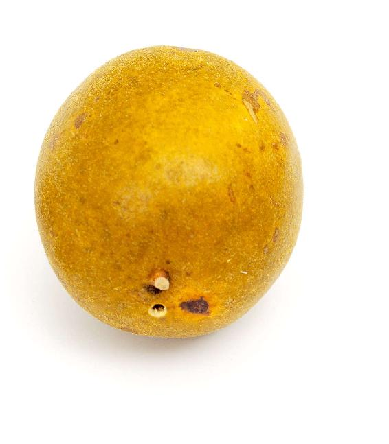


春天是咳嗽的高发期，这时咳嗽往往跟流行性的病毒和细菌有关系。比如，很多朋友感冒好了以后咳嗽不止。有些朋友则是感染了百日咳杆菌，得了百日咳。其实，百日咳不仅小孩会得，大人也会得。现在有一个越来越明显的趋势——越来越多的成人和孩子患百日咳，跟以前只是小宝宝容易患百日咳有了一些区别。
小孩子如果长期咳嗽，可以用罗汉果和柿子蒂做一款镇咳饮。罗汉果在超市很容易买到，柿子蒂可以到药店购买，或者买一些柿饼，把柿饼吃掉，留下的柿子蒂就可以用了。
这个方子止咳化痰效果很好，特别是对于痰多、痰黄的咳嗽。它是一个偏于清热咳的茶饮，可以用来调理小孩子的长期咳嗽。
小孩子如果咳嗽的时间很长，一个月、两个月、三个月，您会发现他的痰会发黄，夜里睡觉的时候咳嗽会加重，这种情况是最适合用这道茶饮方的。
另外，这道茶饮对小朋友的食积咳嗽也有很好的效果，还能预防小孩子的百日咳。
很多朋友虽然知道罗汉果有止咳的作用，但他们都是用它来泡水喝，这样效果不是很好。
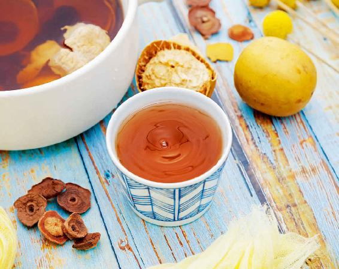
镇咳饮
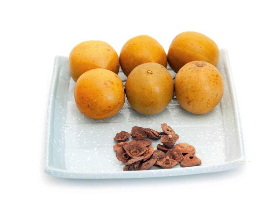
原料：罗汉果1个，柿子蒂3个。（这是一天的用量。图片中为罗汉果6个，柿子蒂18个。）
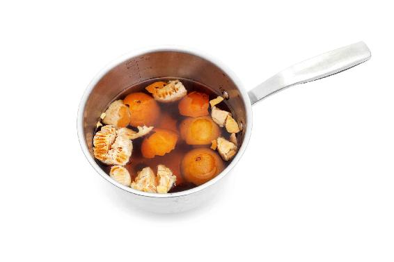
做法：
把整个罗汉果压破，然后掰开，连皮带瓤、籽一起放到锅里，加入柿子蒂。加水煮40分钟以上，当这个水变得红红的、甜甜的，才算充分地得到了罗汉果的药性。
允斌叮嘱：
1.罗汉果可以反复煮两三次，每次都煮40分钟。可以把水滤出来之后，加水再煮。
2.煮到第三遍的时候，水的颜色就比较淡了，这时您可以少加一点水。煮完以后，把它们混合在一起，您就可以喝一整天了。
广西是很著名的罗汉果产地，那里的罗汉果非常好。但我发现本地人用罗汉果也是泡水喝，后来我告诉那边的朋友，罗汉果如果用水泡着喝，其实不能把它的药性全部泡出来，这是一种浪费，很可惜的。
如果您用前述方法来喝罗汉果水就会发现，效果跟你用水泡罗汉果有天壤之别。
有一些上班族可能觉得煮40分钟时间很长，没有时间每天这样煮。
有一个很简单的方法，因为这个汁可以存放在冰箱里，好几天也不会坏。所以我建议您每次煮六天的量，也就是用6个罗汉果，18~20个柿子蒂（因为柿子蒂有大有小）一起煮水。
记住一个要点：每次您喝的时候，从冰箱里取出来，一定要把它加热饮用，千万不要凉着喝。凉着喝的话，效果会大打折扣的，这种寒凉会直接伤到胃气，导致咳嗽。
如果您觉得这样煮还是很麻烦的话，还有一个更简单的方法。
有一次，我在长沙出差，有位朋友特意飞到长沙来找我，他咳嗽好几个月了，咳得非常厉害。当时我在长沙住的地方没有厨房，我就用电饭煲给这位朋友煮罗汉果。
用电饭煲煮，其实还有一个好处——不用调节火的大小，设置好后一直煮就行。煮到您所设定的40分钟后，电饭煲就会自动跳闸。
当然，现在有各种养生壶，煮起来就更方便了。
读者评论：喝了镇咳饮，孩子的咳嗽减轻了很多
元_h：老师的罗汉果柿子蒂镇咳饮前几天刚给孩子用过效果很好，孩子因支气管炎咳了三周，吃药没能止咳，喝了这个茶饮第二天就减轻了很多，现在基本不咳了。
83140241：孩子这两天又咳了，昨晚去买了柿子蒂，给他熬了，他没有排斥，喝了小半碗，说很好喝，早上感觉嗓子舒服些了。
馨方：风热感冒咳嗽，按照书上的方法1个罗汉果3个柿子蒂，喝一次就见效，好神奇。过几天又咳，又喝了一次，基本痊愈。
允斌解惑：喝到什么程度可以把柿子蒂去掉？
A葸崽崽：老师，喝到什么程度可以把柿子蒂去掉，光喝罗汉果？
允斌：如果咳得不重了，只是有痰 ，就可以只喝罗汉果，加一点鱼腥草更好。
每年从四月开始一直到六月，是百日咳的高发期。百日咳跟普通的咳嗽不一样，它是由百日咳杆菌引起的一种呼吸道传染病，是通过飞沫传染的。
百日咳是小孩之间比较常见的一种传染性的咳嗽。关于百日咳，很多家长对这个名字很熟悉，但对它的认识可能存在两个误区。
第一，不知道孩子长期咳嗽是由呼吸道病毒感染引起的，还是由于百日咳杆菌引起的。
第二，百日咳只有小孩子才会得。
其实，小孩子打了疫苗，感染百日咳的概率反而比较小。
刚刚感染百日咳的时候，症状跟感冒是非常像的，人往往会低热、流鼻涕、咳嗽、喉咙充血红肿等。
百日咳跟感冒怎么区分呢？
第一，得了百日咳以后，人会觉得眼睛总是在流泪。
第二，得了百日咳两三天以后，类似感冒的一些症状减轻了，但咳嗽会越来越重，特别是晚上。
这个时候也是百日咳传染性最强的时期，而且它跟普通的咳嗽不一样，它是一阵一阵的，一开始可能咳一两声，接着就密集地一阵阵地咳，可能连续地咳十几声、几十声，咳得人喘不过气来，然后流眼泪、鼻涕，脸也憋得通红，甚至咳着咳着还会觉得特别恶心，会吐。
第三，咳完之后，吸气时可能会出现一种像鸡打鸣一样的回声。
遇到以上的情况，您就要高度怀疑是不是百日咳了，应该马上就医。百日咳到医院是可以检查出来的。
如果得了百日咳，不管是小孩还是大人，在初期是一定要隔离的。
百日咳初期的传染性很强，假如幼儿园的一个小孩子得了百日咳，如不隔离，幼儿园的很多孩子都可能会被传染上；或者一个成年人得了百日咳，全家人都会被传染上。
最好隔离一个月，即便是在百日咳的后期，传染性没那么强了，它还是会传染人的。
隔离期间，大人或者小孩最好自己住一个房间。
得了百日咳后，还要注意不要让自己再次感染，因为百日咳是通过飞沫传播的,如果自己咳的飞沫到处都是，有可能自己又再次感染了。
得了百日咳的人，衣服、杯子要经常洗换，然后放到太阳底下消毒。
1.打疫苗
以前，小孩子得百日咳的很多，现在为什么少了呢？主要就是因为疫苗的关系。
有经验的家长都知道，小孩子一般在三个月到一岁打百白破疫苗。百白破其实是一种混合疫苗，它是由百日咳、白喉和破伤风混合成的疫苗，小孩一岁以内会打三针，一岁半到两岁打第四针，两岁以上就不再打百白破了。
百白破有一个特点，它对预防白喉和破伤风的效果很明显，但对预防百日咳的效果不是那么让人满意，而且它的免疫保护只能维持几年。
现在全世界都有这样一种现象——七岁以上的大孩子及成年人得百日咳的病例逐渐在增多，我们对百日咳还是要有所认识，注意预防。
2.喝“罗汉果柿子蒂老白茶”辅助调理
得了百日咳，除了要到医院听从医生的建议外，在家里要怎样应对呢？有一个茶饮方可以辅助调理，就是能调理长期咳嗽的茶饮方，它是由罗汉果、柿子蒂，再加上一味老白茶组成。
3.为什么此方要加上老白茶呢？
老白茶对百日咳杆菌有很好的抑制作用。在这个方子里加入老白茶，对已经得了百日咳的，无论是小孩还是大人，都有一个比较好的调理作用。
什么是老白茶呢？
中国有六大茶，其中有一种叫作白茶。白茶跟其他茶的制作工艺不一样，它是摘下茶叶之后不炒、不揉，自然晾晒或者文火烘焙之后制成的一种茶叶。
白茶如果是新茶，它就是茶，没什么特别；如果是存放了三年或者七年以上的白茶，那就是药了。老白茶是帮助麻疹后退热的一味好药，这是民间的用法。
老白茶由于经过陈化，形成了一种能抑菌的物质，最为突出的就是对百日杆菌的抑制作用。
读者评论：孩子咳嗽，喝罗汉果柿子蒂两次就好了
美酒加咖啡：我去年用七个柿子蒂加罗汉果煮水治好了孩子咳嗽的毛病，只喝了两次就好了。当时家里没有老白茶，要不可能效果会更好。
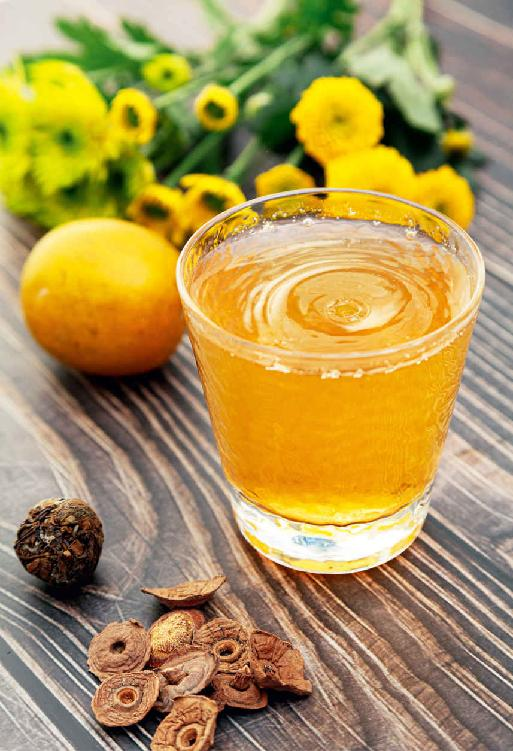
罗汉果柿子蒂老白茶
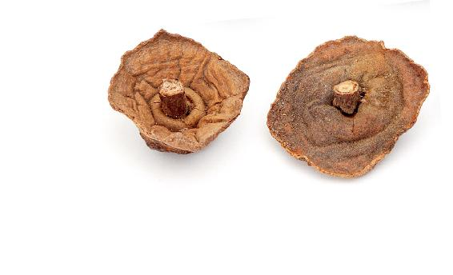
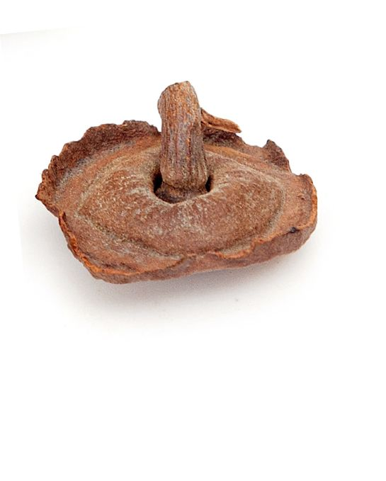

原料：罗汉果1个，柿子蒂3个，老白茶10克。（这是一天的用量。）
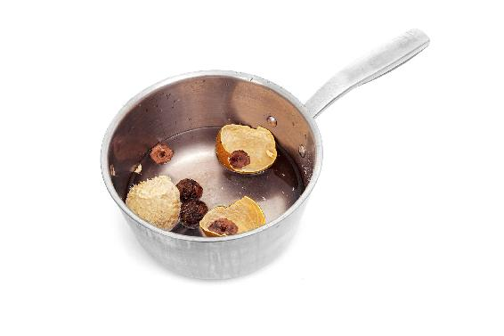
做法：
把三样原料放在一起熬水喝。或者先煮好柿子蒂和罗汉果，因为老白茶只能当天煮，不能隔夜，所以最好先煮好一个星期的罗汉果和柿子蒂水，然后每次煮开冲泡老白茶。
有的朋友从冬天咳到春天，一直都不好，这多半是慢性支气管炎。
支气管炎和百日咳有什么区别呢？
百日咳是很明确的，由百日咳杆菌引起的细菌性感染。而支气管炎比较复杂，多半是由病毒引起的，也有合并细菌感染；慢性支气管炎则是一个反复感染的过程。
人体的呼吸道分为上下两部分，鼻腔和咽喉是上呼吸道，而我们平时所说的普通感冒，其实就是上呼吸道感染，简称上感。
下呼吸道是从气管开始，气管下面的分支叫作支气管。支气管就像一棵树，它有很多分支，可以一直往下分。
从气管开始，可以分出左、右支气管，这是一级支气管；再往下进入左、右肺叶，叫作肺叶支气管，这是二级支气管；然后不断地往下分级。
一直可以分到多少级呢？大约可以分二十四级。分到最后，叫作毛细支气管，毛细支气管还可以再分为肺泡。
您可以想象一下，从我们的咽喉往下就是气管，气管像是一棵树的主干，它往下分叉，逐步在人体的胸部变成一棵倒着生长的树，树枝就是支气管，树叶就是肺泡。这就是人体的下呼吸道结构。
如果我们上呼吸道被感染，也就是平时所说的感冒没有及时调理好，细菌、病毒就会通过上呼吸道进入下呼吸道，感染气管、支气管，产生支气管炎、肺炎，甚至形成一个更加长期的问题，比如肺气肿。
下呼吸道的问题其实就是从支气管开始的，如果得了感冒，真的要及时地把它调理好，以免诱发支气管炎。如果在急性支气管炎阶段，我们能及时地应对，就不会发展成慢性支气管炎。
一旦发展为慢性支气管炎，也就是说，这个人的咳嗽已经有两三个月以上了，这时候再调理就会比较慢。但您还是要坚持调理，以免从支气管炎再发展成肺部的其他疾病，甚至引起心脏的问题。
支气管炎引起的咳嗽有两个特点：
第一，早晚咳嗽。早上起床的时候咳得比较明显，一阵一阵的。白天一般咳得比较少，一到晚上睡觉前又会有一阵咳嗽。
第二，基本上都是咳白痰，而且比较多，早上起来尤其明显。很多痰还不容易咳出来。
还有一点特别要提醒家长朋友注意：小朋友，特别是幼儿、婴儿的支气管炎跟大人的支气管炎不太一样。
小孩子的支气管炎有时候容易被误诊为哮喘。现在患哮喘的小孩子特别多，家长朋友真的要注意是不是被误诊了。因为小孩子的支气管炎往往表现在最细的末梢——毛细支气管上。
小孩子的整个下呼吸道像一棵小树一样，它是非常稚嫩的，还没有发育完全，很容易遭到感染。这就是为什么小孩子一旦感冒以后会长期咳嗽，不容易治愈的原因。
当小朋友患了支气管炎，会表现在非常细小的毛细支气管上。毛细支气管本来就细小，加上充血、水肿，孩子的呼吸就不畅通，会有一种喘、憋闷的感觉，容易被误诊为哮喘。
同样，大人患的一种支气管炎——哮喘性支气管炎，也非常容易跟哮喘混淆。
支气管炎的发病，通常是由细菌、病毒反复感染引起的。哮喘通常是由过敏导致的。病因不同，对它们调理的方法也是不一样的。
关于支气管炎，饮食上要怎么来辅助调理呢？根据季节不同，调理的方法也是不一样的。在春季，我们应该怎样调理支气管炎呢？
我在清明时节分享过的野菜——清明菜，我们可以用它做一款止咳的糖水，对于慢性支气管炎有很好的调理效果。
清明菜有一种特别的功效，就是可以对抗春季呼吸道系统的疾病，特别是咳嗽、痰多，都可以用它来调理。其中，用它来调理慢性支气管炎的效果是最为突出的。
清明止咳糖水对于咳嗽、气喘、慢性支气管炎，还有胃溃疡、十二指肠溃疡，都有辅助调理的作用。
在春天长期咳嗽一直不见好的朋友，用它来调理，效果还是比较明显的。
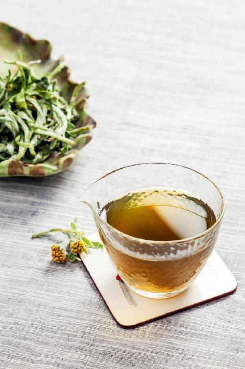
清明止咳糖水
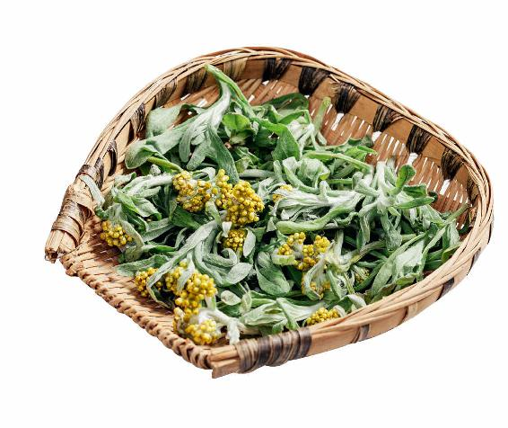
原料：新鲜的清明菜250克，或者干品大约用50克，一点冰糖。
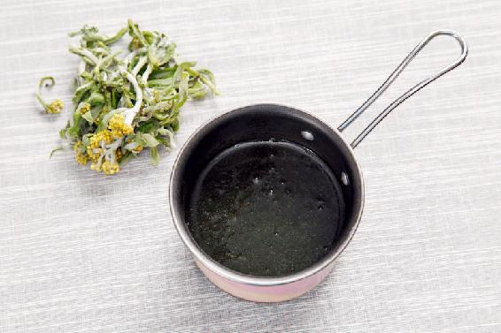
做法：把清明菜冷水下锅，水开后再煮15分钟左右，然后把汤汁滤出来备用。锅里再次加水，把冰糖放进去，和清明菜一起煮15分钟，再把汤汁滤出来。跟之前滤出来的汤汁混合，一天之内分两次把它喝掉。